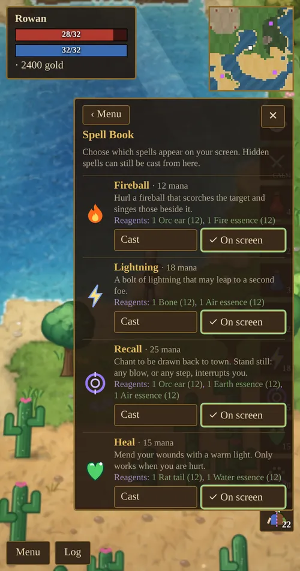
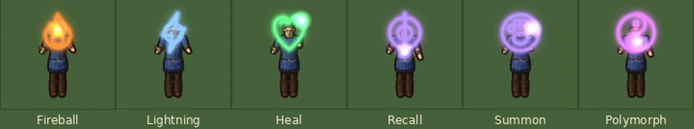
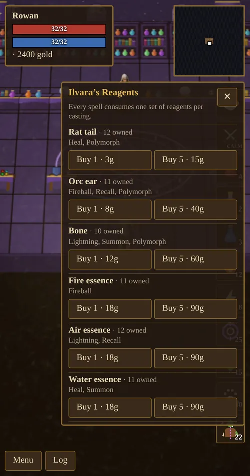
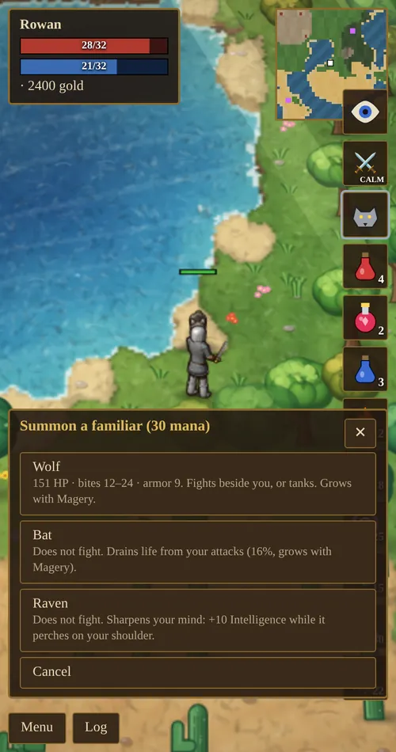
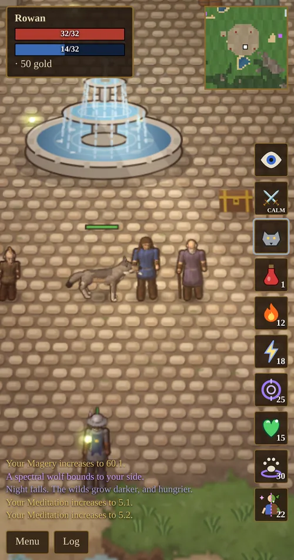
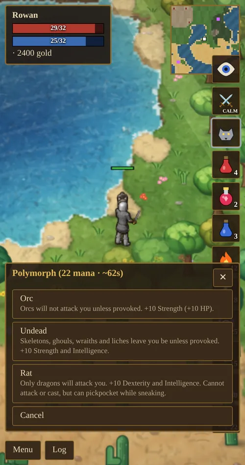

Chapter 5 of 10
Magic
Magic is learned from scrolls, paid for in reagents and mana, and drawn in the air with your own hand.
Learning spells
No one starts with magic. Spells come from spell scrolls, which are found in dungeon treasure chests (more often in deeper dungeons) and dropped by bosses. Read a scroll from your Backpack to learn its spell for good. A scroll for a spell you already know crumbles to dust.
Learning your first spell changes things:
- A mana bar appears under your health.
- Magery and Meditation appear in your skills.
- Archmage Ilvara’s tent appears at the western edge of the town square. She sells reagents, trains Magery, Meditation and Enchanting, and keeps the enchanter’s table.
- The Spell Book appears in the menu, and spell buttons appear on screen.
The six spells
Open the Spell Book to cast any spell you know. You can also choose which spells get a button on the right of the screen.
Fireball and Lightning need a monster within 8 tiles that you can see. If there is none, you are told “No target in range” and nothing is spent.

| Spell | Mana | Reagents | Effect |
|---|---|---|---|
| Fireball | 12 | Orc ear, Fire essence | Hits the target for (14–24 + Magery ÷ 4) damage and scorches anything beside it for 60% of that. |
| Lightning | 18 | Bone, Air essence | (22–34 + Magery ÷ 3) damage. 60% chance to jump to a second foe within 3 tiles for 60%. Can strike birds and bats in the sky. |
| Heal | 15 | Rat tail, Water essence | Restores (18–26 + Magery × 0.55) health. Only works when you are hurt. |
| Recall | 25 | Orc ear, Earth essence, Air essence | A 2.5 second chant that returns you to town. Any step or any blow interrupts it. |
| Summon | 30 | 2 Bones, Earth essence, Water essence | Calls a familiar: a wolf, a bat or a raven. |
| Polymorph | 22 | Rat tail, Orc ear, Bone, Aether | Turns you into an orc, one of the undead, or a rat. |
Fireball and Lightning damage is also multiplied by your Intelligence bonus and any damage bonus from your gear. Your character sheet shows the exact ranges for the spells you know.
Casting
When you cast, your hero traces the spell’s glyph in the air with a glowing hand: a flame for Fireball, a jagged bolt for Lightning, a heart for Heal, a spiral for Recall, a paw for Summon and a split figure for Polymorph. When the glyph is complete it flares, and the spell is flung at your target or lifted upward.
Each cast uses mana and one set of reagents, and teaches Magery. After casting there is a short pause before your next attack or spell.
Summon and Polymorph first ask you to choose a familiar or a form. The glyph is drawn only after you choose.

Reagents
Every spell consumes its reagents each time you cast it. You can collect them from monsters or buy them from Ilvara.

| Reagent | Where it drops | Ilvara’s price |
|---|---|---|
| Rat tail | Rats and ratmen | 3g |
| Orc ear | Orcs | 8g |
| Bone | Skeletons, the undead and many others | 12g |
| Fire essence | Fire elementals | 18g |
| Air essence | Air elementals | 18g |
| Water essence | Water elementals | 18g |
| Earth essence | Earth elementals | 22g |
| Aether | Monsters in dungeons, and bosses | 30g |
Elementals live in the Elemental Sanctum, whose summoner, Veyra, drops a handful of every essence.
Mana and Meditation
Your mana is 10 + Intelligence. It comes back on its own, faster with higher Magery and much faster with higher Meditation. The character sheet shows your mana regeneration per second. Mana potions restore 30 or 80 mana at once.
Familiars


| Familiar | What it does |
|---|---|
| Spectral wolf | Fights beside you. It has 30 + Magery × 2.2 health, bites harder and gains armor as your Magery grows. A wolf button lets you switch between guarding your side and charging ahead to hold the enemy’s attention. Tap it to pet it. |
| Spectral bat | Does not fight. Heals you for a share of the damage you deal: 5% at 0 Magery, 25% at 100. |
| Spectral raven | Does not fight. Perches on your shoulder and gives +10 Intelligence. |
You can have one familiar at a time. Dismiss it from the Spell Book.
Polymorph
Polymorph lasts 45 seconds plus 0.3 seconds per point of Magery (75 seconds at 100). While in a form, creatures of that kind leave you alone unless you attack them.

| Form | Bonus | Who ignores you | Limits |
|---|---|---|---|
| Orc | +10 Strength | All orcs | |
| Undead | +10 Strength and Intelligence | Skeletons, ghouls, wraiths and liches | |
| Rat | +10 Dexterity and Intelligence | Everything except dragons | Cannot attack or cast; can still pick pockets while sneaking |